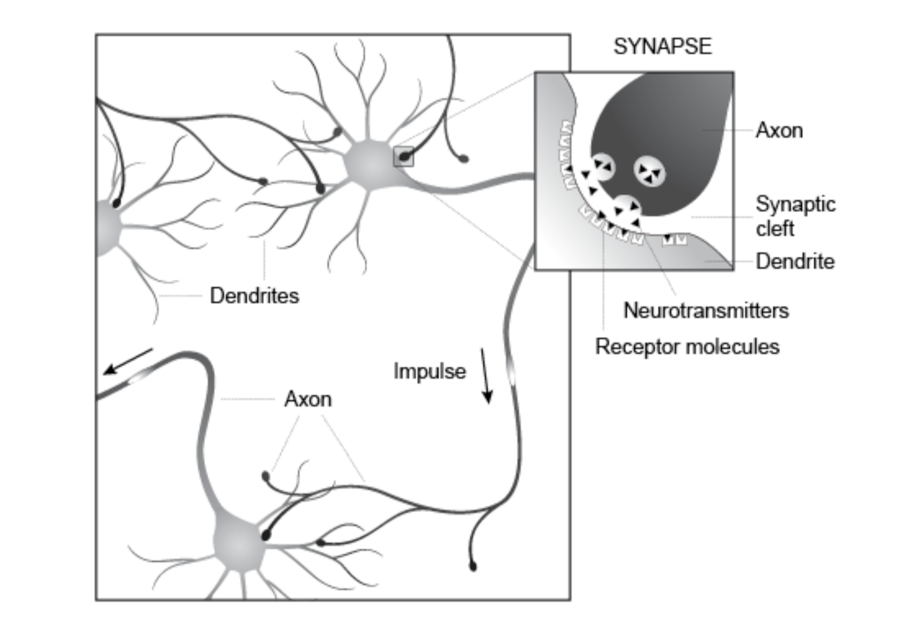
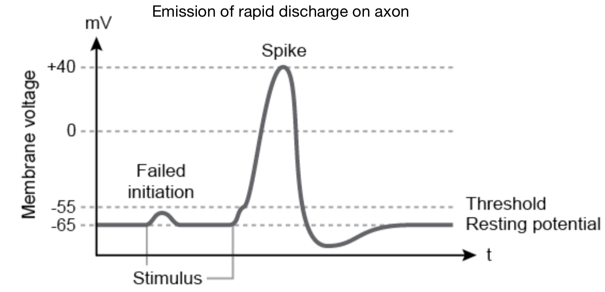
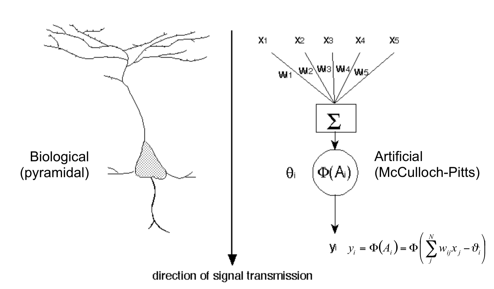
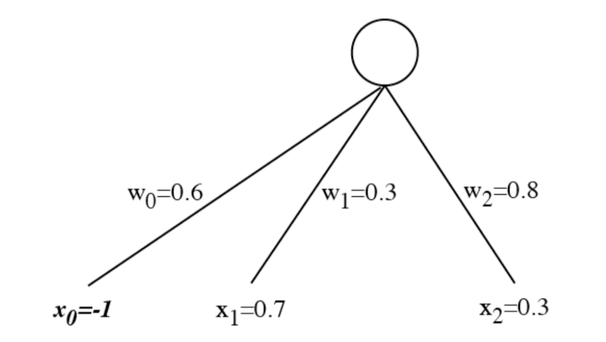
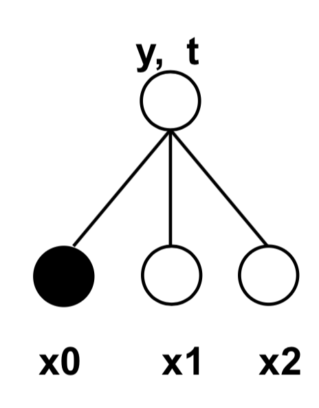
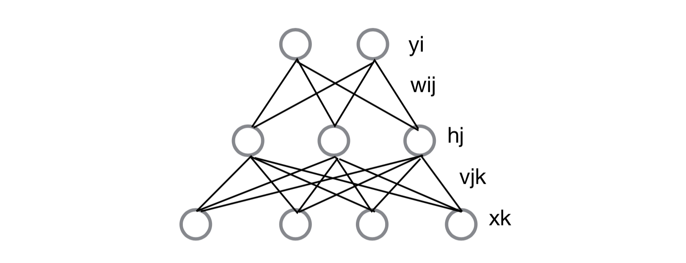
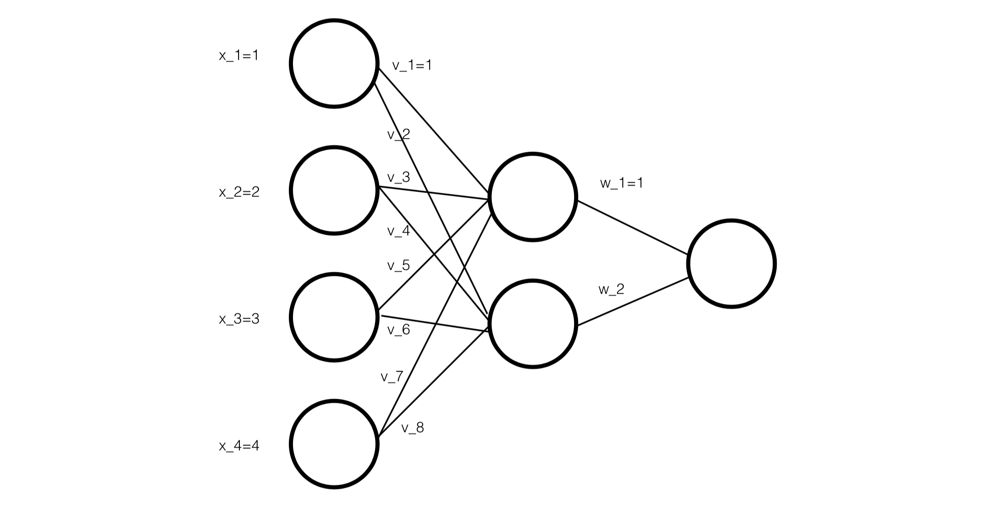

虽说人工神经网络的 back propagation 应该已经跟微积分一样基础了，但是每年都要忘了捡起来一次。这次课上 PPT 里都直接写的 plain text，不太好看，决定还是用 latex 稍微整理一下方便忘了可以捡起来参考
生物学启发
神经网络都这么叫了，自然是基于人脑神经元的树突轴突形成的网络设计的。
那么神经元就是长成这副样子的，轴突和树突之间使用生物电形成的脉冲传递信息。

而对于每一个神经元，在时间尺度上都会收到生物电的激发。就像这样，在一开始的时候，生物电脉冲的电压低于激发阈值，因此神经元没有被激活；而一旦激发到了某个阈值以上，就会形成一个高电压脉冲；在脉冲之后会有一段时间的休眠调整期，此阶段无法被激活；经过短暂休眠调整后，再次等待脉冲信号激活。

人工神经网络结构
根据生物的神经网络结构，自然而然就能从中启发，设计出人工神经网络 Artificial Neural Network 的结构

输入信号为 $X={x_1,x_2,x_3,x_4,x_5}$，权重设置为 $W={w_1,w_2,w_3,w_4,w_5}$，经过加和之后，高于阈值 $\theta_i$ 的信号经过激发函数 $\Phi()$ 获取到输出 $y_i$。
$$y_i=\Phi(A_i)=\Phi(\sum\limits^N_jw_{ij}x_j-\theta_i)$$
而激发函数 $\Phi()$ 为了方便计算一般会选择 Sigmoid 函数 $\Phi(x)=\frac{1}{1+e^{-kx}}$ 或者 $\Phi(x)=\tanh(kx)$

而为了容易被程序表达，阈值可以等价地替换为一个值永远是 -1 的偏置 bias 输入神经元 $x_0$。这样，网络输出的计算中，就可以将阈值 $\theta_i$ 移到求和符号内了。
\begin{align}
y_i=\Phi(A_i)&=\Phi(\sum\limits^N_{j=1}w_{ij}x_j-\theta_i)\\
&=\Phi(\sum\limits^N_{j=0}w_{ij}x_j)
\end{align}
单层感知机参数学习
单层感知机 Perceptron 就是只有输入层和输出层的 2 层神经网络结构。

单层感知机的表达能力有限，只能表达线性划分的问题。涉及到异或等非线性划分，就无法完成。不过由于网络结构非常简单，权重的学习非常简单。
- 在初始化的时候，将所有的权重随机初始化在 0 附近
$$
w_{ij}=rand(\pm 0.1)
$$ - 计算出网络输出
$$
y_i\sum\limits_{j=0}w_{ij}x_j
$$ - 基于 Widrow-Hoff 规则进行学习，每次根据真实值 $t_i$ 与实际输出值 $y_i$ 的误差 $\delta_i=t_i-y_i$ 对权重进行更新，更新的系数 $\eta$ 为预设的学习率
\begin{align}
\Delta w_{ij}&=\eta \delta_i x_j \\
&=\eta (t_i-y_i)x_j
\end{align} - 然后对所有的权重进行更新
$$
w_{ij}=w_{ij}^{t-1}+\Delta w_{ij}
$$ - 重复 2-4 直到误差为 0
多层神经网络参数学习
多层神经网络相比单层感知机，在输入层 $x$ 和输出层 $y$ 中加入了隐藏层 $h$，隐藏层将上一层映射到一个下一层能够线性划分的空间，因此这样的神经网络就可以表达非线性可分的问题。

多层神经网络相比单层感知机，就是多了误差 $\delta$ 的后向传递。在单层感知机的线性计算中，误差计算为
\begin{align}
\delta_i&=t_i-y_i\\
\Delta w_{ij} &= \eta \delta_i x_j
\end{align}
而在多层神经网络非线性输出的计算中，误差需要乘上输出的导数
$$
\delta_i = (t_i-y_i)\Phi’(A_i)
$$
在隐层，将相连的输出神经元的误差后向传递到隐层神经元
$$
\delta_j = \sum_i w_{ij}\delta_i \Phi’(A_j)
$$
- 随机初始化权重
- 计算隐层，对于每一个隐层神经元，将所有与它相连的输入层神经元 $x_k$ 在权向量 $v$ 上进行加权相加后，通过激发函数 $\Phi()$ 获取
$$
h_j = \Phi(\sum_k v_{jk}x_k)
$$ - 计算输出层，对于每一个输出神经元，将所有与它相连的隐层神经元 $h_j$ 在权向量 $w$ 上进行加权相加后，通过激发函数获取
$$
y_i = \Phi(\sum_j w_{ij}h_j)
$$ - 在输出层，基于真实值和实际输出计算出误差 $\delta_i$
$$
\delta_i = \Phi’(\sum_j w_{ij} h_j)(t_i-y_i)
$$ - 后向传递，根据输出层的误差 $\delta_i$ 计算出隐层误差 $\delta_j$
$$
\delta_j = h_j(1-h_j)\sum_i w_{ij}\delta_i
$$ - 使用各层误差，计算出各层的权重变化
\begin{align}
\Delta w_{ij} &= \delta_i h_j\\
\Delta v_{jk} &= \delta_j x_k
\end{align} - 更新权重
\begin{align}
w_{ij} &= w_{ij} + \eta \Delta w_{ij}\\
v_{jk} &= v_{jk} + \eta \Delta v_{jk}
\end{align}
一个例子：多层神经网络参数计算

- 初始化权重，输入层设置为 $x_k = k, k=1,2,3,4$，输入层和隐层权重都设置为 1
计算隐层，对于每一个隐层神经元，将所有与它相连的输入层神经元 $x_k$ 在权向量 $v$ 上进行加权相加，计算出隐层神经元 $y_1$ 和 $y_2$
\begin{align}
y_1 &= x_1v_1+x_2v_2+x_3v_3+x_4v_4 = 10\\
y_2 &= x_1v_1+x_2v_2+x_3v_3+x_4v_4 = 10
\end{align}计算输出层，对于每一个输出神经元，将所有与它相连的隐层神经元 $y_j$ 在权向量 $w$ 上进行加权相加，计算出输出层神经元 $z_1$
$$
z_1 = y_1w_1+y_2w+2 = 20
$$- 在输出层，真实值为 $t_1=25$，则基于真实值和实际输出计算出误差 $\delta_{z_1}$
$$
\delta_{z_1} = \Phi’(\sum y_iw_i)(t_1-z_1) = 1\times(25-20)=5
$$ - 后向传递，根据输出层的误差 $\delta_{z_i}$ 计算出隐层误差 $\delta_{y_j}$
\begin{align}
\delta_{y_1}&=\delta_{z_1}w_1=5\times 1=5\\
\delta_{y_2}&=\delta_{z_1}w_2=5\times 1=5
\end{align} 使用各层误差，计算出各层的权重变化
输入层到隐层的权重 $v$
\begin{align}
\Delta v_1&=\eta x_1 \delta_{y_1}=0.01\times 1\times 5=0.05\\
\Delta v_2&=\eta x_1 \delta_{y_2}=0.01\times 1\times 5=0.05\\
&\cdots
\end{align}
隐层到输出层的权重 $w$
\begin{align}
\Delta w_1&=\eta y_1 \delta_{z_1}=0.01\times 1\times 5=0.05\\
\Delta w_2&=\eta y_2 \delta_{z_1}=0.01\times 1\times 5=0.05
\end{align}更新权重
\begin{align}
v_1&=v_1+\Delta v_1=1.05\\
v_2&=v_2+\Delta v_2=1.05\\
&\cdots\\
w_1&=w_1+\Delta w_1=1.5\\
&\cdots
\end{align}